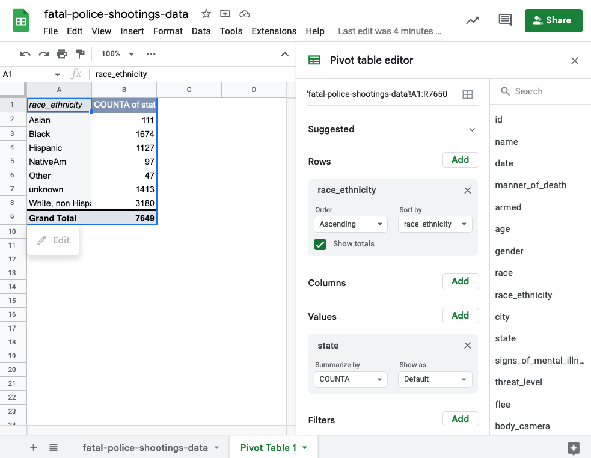
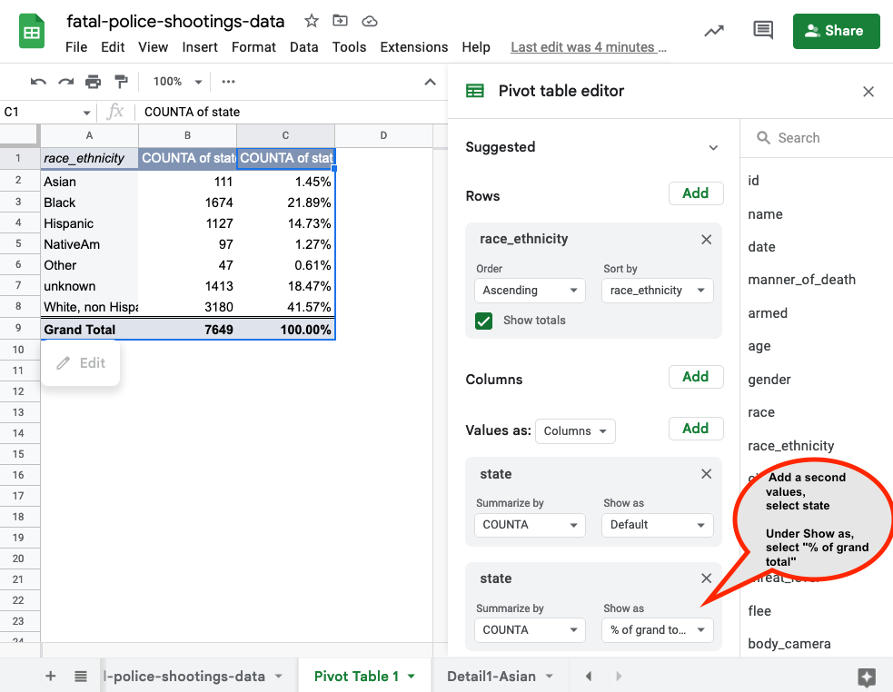
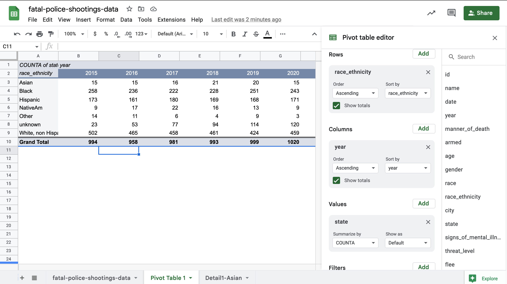
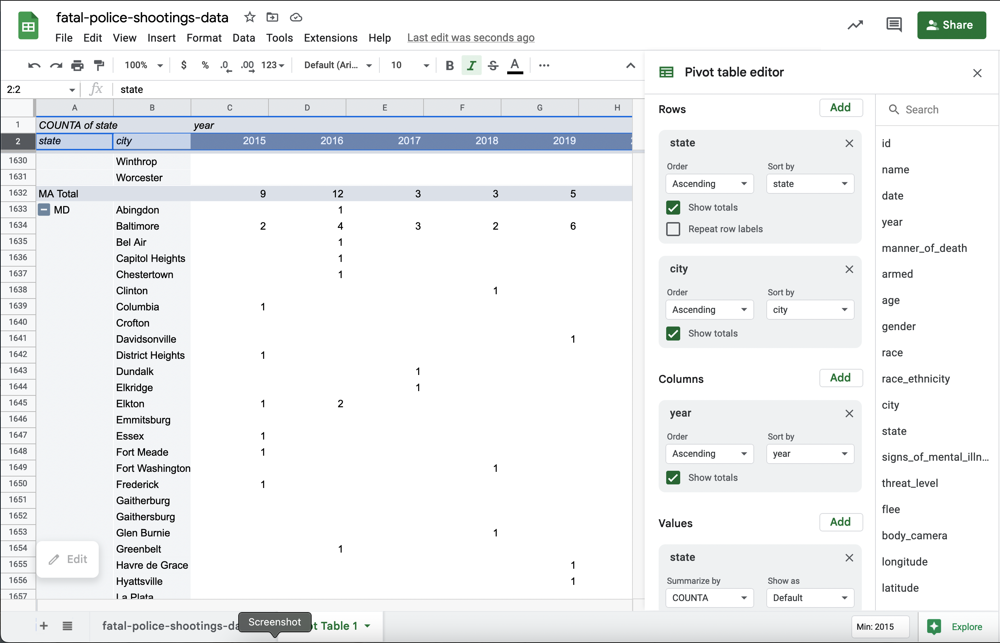

9 Grouping with pivot tables
In the wake of a police shooting in 2016, reporter Mitch Smith obtained a list of traffic stops from the St. Anthony Police Department in Minnesota. He was writing a story on Philandro Castile’s death and was running out of time. He wanted to answer a simple question: Were minority motorists more likely to be stopped in St. Anthony than whites?
Rob Gebeloff made a quick pivot table to answer the question. That night, Smith wrote:
In each of the three small suburbs patrolled by the St. Anthony police, less than 10 percent of the population is black. But data released by the city on Tuesday showed that a far higher percentage of the people ticketed or arrested by St. Anthony officers were African-American.
Last year, around 19 percent of those cited by St. Anthony police were black, as were roughly 41 percent of people arrested by the department, a review of the city’s data showed. Those percentages do not include the large number of defendants whose race was unknown.
Summarizing a list of items in a spreadsheet is done using pivot tables. In other languages, it’s considered “aggregating” or “grouping and summarizing”. Think of pivot tables and grouping as answering the questions, “How many?” and “How much?” They are particularly powerful when your question also has the words “the most” or the “the least” or “of each”. Some examples:
- Which Zip Code had the most crimes?
- What month had the least total rainfall?
- How much did each candidate raise last quarter?
- In playing cards, how many of each suit do I have in my hand?
- On average, are Cronkite students taller or shorter than in other schools?
Confusing grouping with sorting or arranging
Many reporters confuse this summarization with “sorting”. One reason is that this is how we express the concept in plain language: “I want to sort Skittles by color.”
But in data analysis, sorting and and grouping are very different things. Sorting involves shuffling a table’s rows into some order based on the values in a column. In other languages, this is called arranging or ordering, much clearer concepts. Grouping, which is what pivot tables do, is a path to aggregating and computing summary statistics such as a count (the number of items), sum (how much they add up to), or average for category. It means “make piles and compute statistics for each one.”
When to use filter vs. pivot tables
Something that trips up beginners is a desire to see details and totals at the same time, which is more difficult than it sounds.
A filter is used to display your selected items as a list. You’ll get to see all of the detail and every column. As a convenience, Google Sheets shows you how many items are in that filtered list. That’s great when you want to just look at them, or get more information about them. For instance, if you had a list of crimes by ZIP code, you might just want to see the list in your neighborhood – where, exactly, were they? When did they happen? Was it at night or the morning? What crimes happened on which blocks?
A pivot table is used when you just want to see summaries – does my ZIP code have more crime than others? Are robberies more common than car theft in my Zip code, and how does that compare to others?
In practice, you’ll go back and forth between summary and detail. They’re both important, just different.
9.1 Tutorial
We will continue to use data from the Washington Post police shootings database for this tutorial.
First, let’s modify this spreadsheet to include the descriptions of race and ethnicities: A for Asian, B for Black, etc.
- Select Column I, city, and insert a new column to the left. Name it race_ethicity
- Create a filter. Select race, filter for A
- Type Asian in Column I. Copy Asian down the entire column so every A in column H corresponds with Asian in Column I
- Repeat: B = Black. H = Hispanic. W = White, non-Hispanic, N= Native American, O=Other, blanks=Unknown.
Follow this video to see the process.
Setting up the pivot table
From the main menu on Google Sheets, choose Insert, then Pivot table, then New sheet.

Next, you will see the Pivot Table editor. Here’s what it looks like:

Counting , or “how many”?
For Rows, select Add and then race_ethnicity. For values, select Add and then state. You will now see all of the race and ethnicity totaled.
We’re totalling on state because it’s good to have something that’s always filled out into the Values area (state is a safe one in this data).

Percents of total
It’s hard to compare raw numbers unless they’re really small. Instead, we’d like to know what percent of fatalities by ethnicity. To get a “Percent of Column total”, do the following:
- Add a second values, select state
- Under Show as, select “% of grand total”

More variables
Suppose you’d like to see the number of fatalities by year, with the years across the top and the ethnicity down the sides. Add a year variable to columns
- Remove the percent of total column
- Select Columns, then year

Even more variables
Say you wanted to see each city’s total shootings by year. Which one had the most last year, and which one had the most overall?
This is actually really hard in a pivot table, because there are cities with the same names in different states. It means you’d need to have a pivot table with TWO columns down the side, and one across the top. Here’s an attempt at solving the problems:
- First, Rows, add state
- Rows, add city
- Values, add state, CountA is the default
- Columns, add year

The problems is we can’t sort by the combination of city and state. But it does help answer the question on some level.
9.2 FAQ
I have too many columns
If you want two sets of statistics – say, number of fatalities and percent of fatalities – across the top, it can get very wide and confusing very quickly. One alternative is to change it into more of a vertical rectangle by dragging the “Values” element from the columns to the rows on the right. (This only shows up when you have two calculations being made.)
I want to sort by percents, not numbers
You can’t.
Things aren’t adding up
You have to be super careful about which column you use to Count things – it has to always be filled out (there can’t be any blanks). Go through the filters and find one that doesnt have (Blanks) at the bottom to be sure.
Its a crazy number!
You might have dragged a numeric column into the “Values” area. Check to see if it says “Count” or “Sum”. Change it to “Count” if it has something else on it, unless you wanted to add up that column.
This is so frustrating - I can’t get what I want
Right? It’s time to go to a programming language!